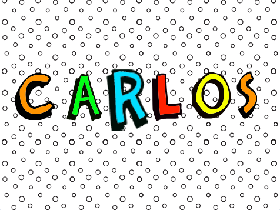
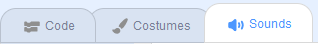
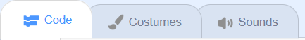
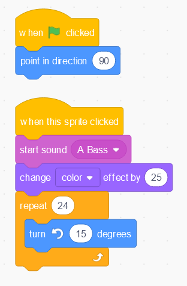
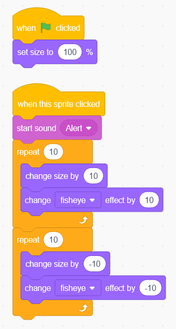
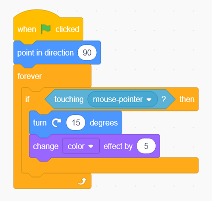
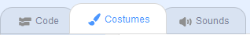
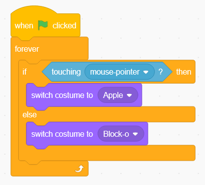

5. Animate name¶
In this practice we are going to show a name on the screen with special effects in its letters. When the mouse passes over each letter, it will show a special effect.
{kind=link}
We start the Scratch editor.
Press the language button
 in the top bar and choose English.
in the top bar and choose English.Press the tutorial button and then the "Animation" button.
We select the tutorial "Animate a name" and we visualize it.
In this tutorial we will see the basic operation of the program.
We delete the cat object by clicking on the trash can icon.

Then we are going to select a backdrop for our name. In the button select backdrop
 We choose the one we like the most.
We choose the one we like the most.Next we are going to select several letters with our name by pressing select object
 and then in the "letters" tab we choose the appropriate letters with the style we want.
and then in the "letters" tab we choose the appropriate letters with the style we want.Finally we drag the letters on the screen with the mouse and place them in order to form a name.
Now we are going to program the letters so that they have special effects. When you click the mouse on the first letter, it will make a sound and change color as it rotates one full turn.
First we select the first letter and click on the sounds tab . In the button select sound
 we choose one that is brief and we like it.
we choose one that is brief and we like it.Then, in the code tab  We add this program.
Press the green flag
 to test the operation of the program.
to test the operation of the program.In the second letter we are going to program that when we click on it, it will increase in size with the fisheye effect as if it were inflating and then it will return to its initial size. We will also add a new sound to the other effects.
Press the green flag
to test the operation of the program.In the third letter, we're going to show effects whenever the mouse hovers over it, without needing to click. This is achieved with the "touching mouse pointer?" sensor.
By hovering the pointer over the letter we are going to make it change color while it rotates.
A "forever" loop will be checking all the time if at any time the mouse touches the letter and at that moment the special effect is applied.
Press the green flag
to test the operation of the program.Finally we are going to program the fourth letter so that it changes its disguise for a fruit when the mouse passes over it.
First we must select the desired letter and go to the costumes tab , where we are going to add a fruit costume.
Then in the code tab We add the following program that swaps the costumes when the mouse hovers over it.
Press the green flag
to test the operation of the program.
{kind=link}
{kind=link}
{kind=link}
{kind=link}
Challenges¶
Complete the name with more letters that have special effects based on the ones seen in this tutorial.
Remember that you can apply effects when the mouse
- Click on the letter.
- Hover over the letter.
The effects that can be applied are.
- Sound.
- Of size.
- Movement or rotation.
- Of graphic effects (color, fisheye, swirl, pixelate, etc.)
- Change costume.
- Combine several effects at once.